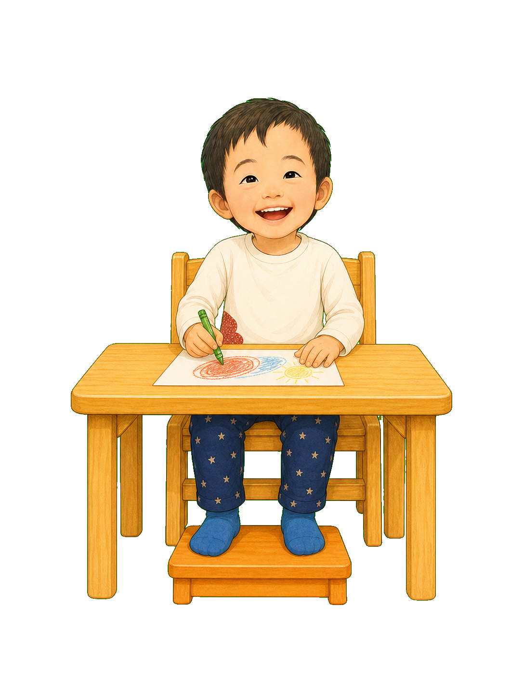
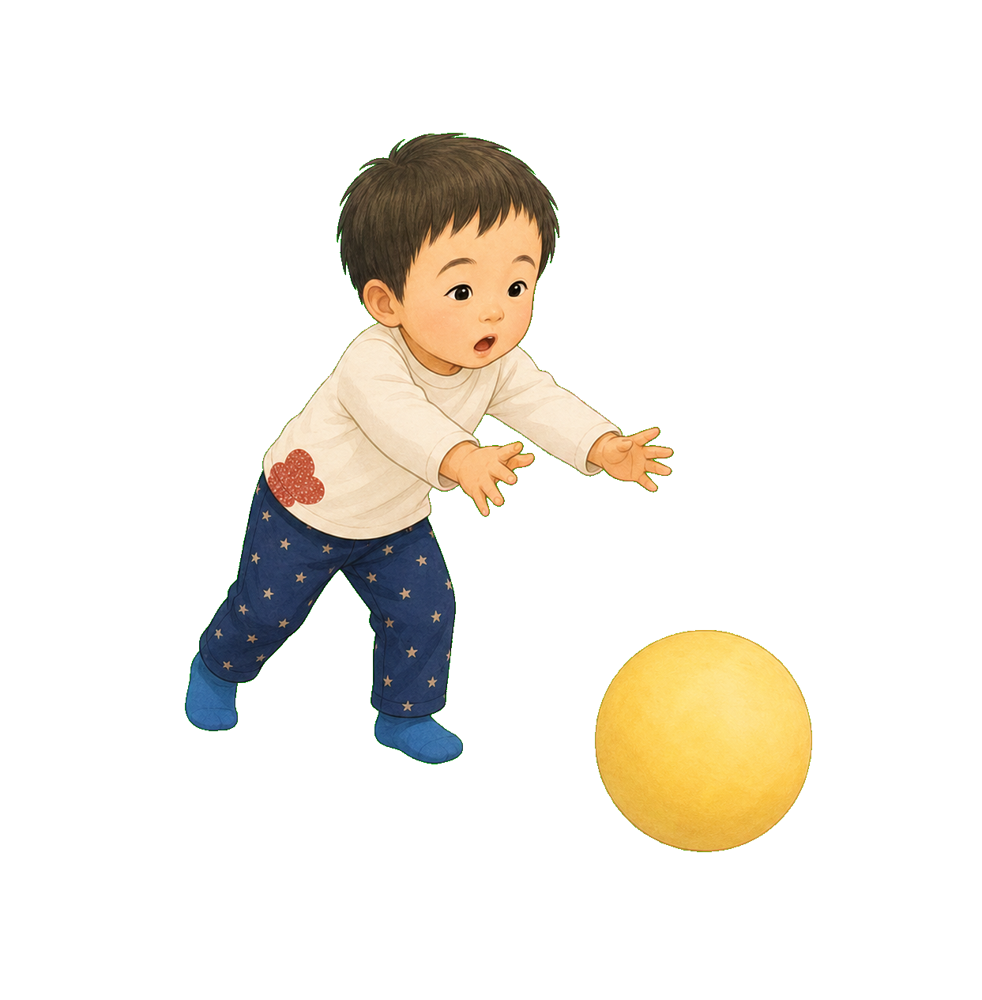
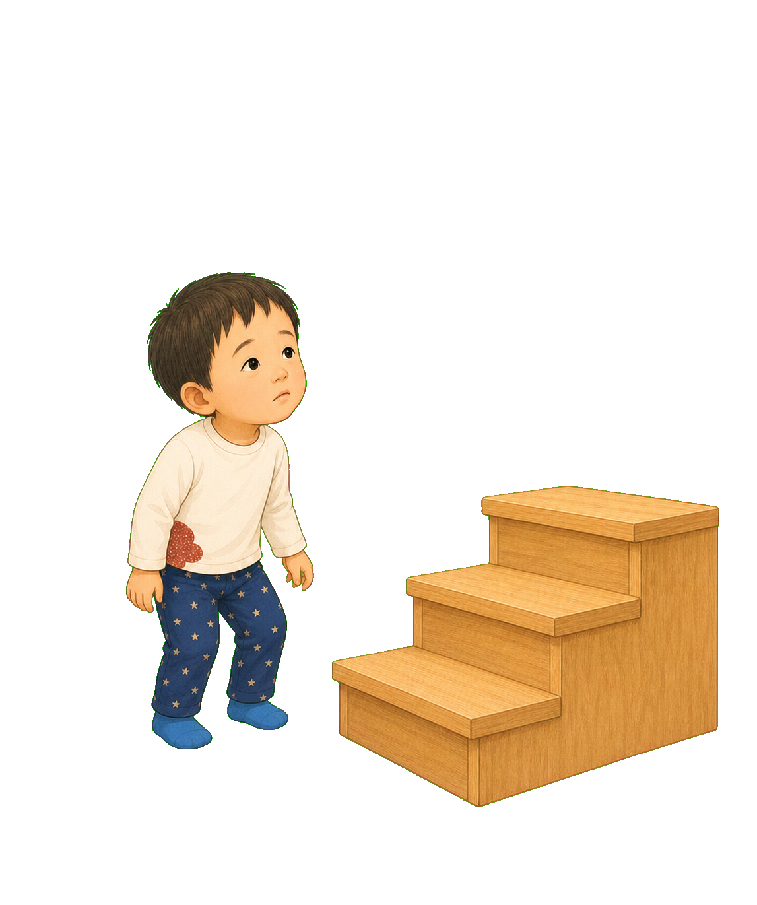

Body Wonders 2 · Physical Therapy
Usagi Sensei,
who decided
this was “easy”?
Inside a single movement,
there is so much invisible work.


1
Sit.
Catch a ball.
Climb the stairs.
For everyone else, each looks like one movement.
But for me—
it means doing many movements
all at once.
2
Sit
My feet dangle.
My body wobbles.
I want to draw, but even my hand wobbles.
To sit, I need tosupport with my feet · hold up my trunk · keep my head steady · move my eyes and handsall together.

3
Usagi Sensei
sets down a footrest.
Feet flat. Hips steady.
My hand moves smoothly.
Instead of asking me to try harder,
let's reduce the wobble.

4
Catch a ball
I can see it,
but my hands don't arrive in time.
To catch, I need tospot it · track it · reach both hands · keep my body uprightall together.
My eyes, hands, and body
all have to work at the same time.

5
We steady my body
on a bench,
and use a big, slow ball.
Look. Wait. Reach.
I caught it!
At a speed that suits me,
my eyes and hands can meet.

6
Climb the stairs
Everyone else keeps going.
I stop still.
To climb, I need tosee the next step · balance on one leg · lift the other · shift my weightall together.
Inside a single step,
there is so much work.

7
My body
needs a little more time
to bring that work together.
My muscle tone is low. My joints are flexible.
When I stand, my heels tend to tilt.
I need time to find my balance.
None of that is “bad.”
It is how my body works.
8
Usagi Sensei
looks before saying, “Try harder.”
Trunk. Back. Knees. Feet.
Gaze. Speed. Fatigue.
“There isn't just one reason
this is hard.””
9
Usagi Sensei's
toolbox.
A footrest. Bench. Mirror.
Footprints. A handrail. A slow ball.
A rest card for when I am tired.
These tools aren't here to fix me.
They help me use my abilities.
10
Grip the handrail.
Look at the footprints.
A low step.
Time to wait until I move.
Usagi Sensei
prepares a way I can do it.

11
Look at the next step.
Balance on one leg.
Lift the other.
One, two.
The final step is mine to take.
It isn't that I “can't.”
One clear step at a time. Tools that fit me. A pace that fits me.
When the way works for me,
my steps keep moving forward.
After the story
A single movement contains many jobs for the body.
The child in this story has Down syndrome. Along with low muscle tone, strength, joint flexibility, foot position, posture, balance, eye–hand coordination, and fatigue differ from child to child. Before rushing a movement, break down and observe the abilities it requires; this can reveal useful supports. Choose footrests, chairs, rails, step heights, shoes, and orthoses only after an individual assessment and safety check by a physical therapist or other qualified professional.
Explore questions related to this story